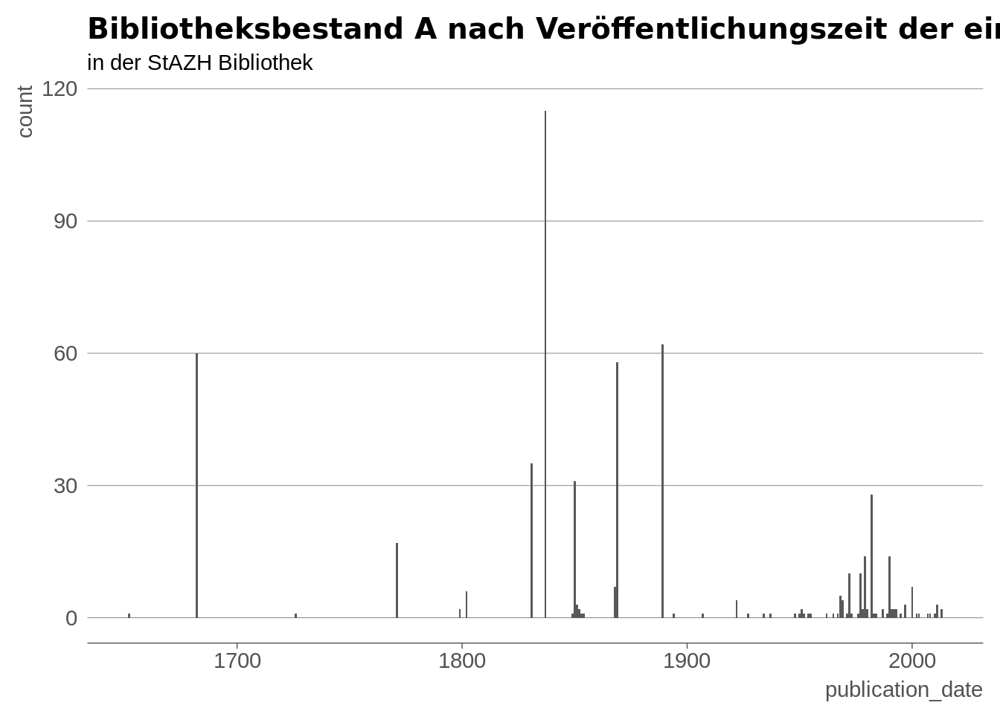
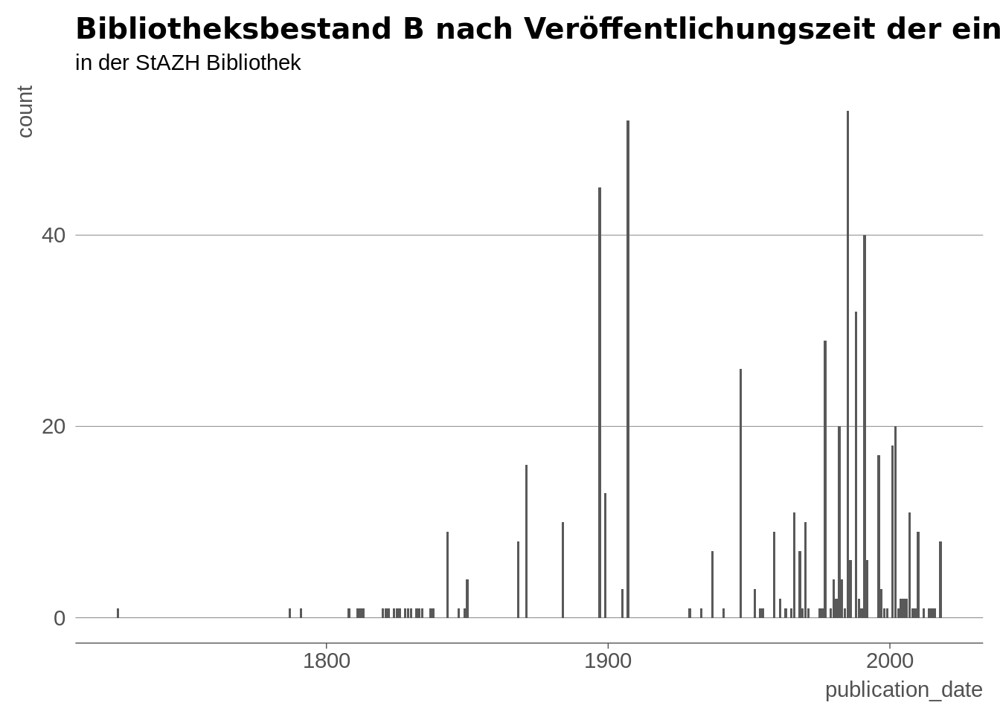
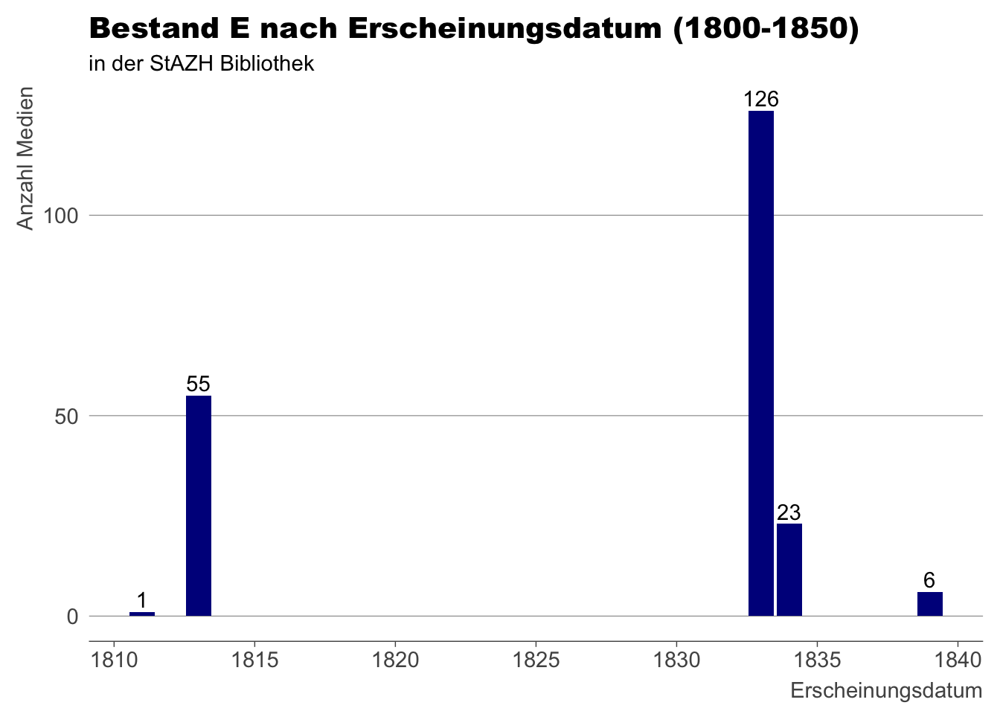
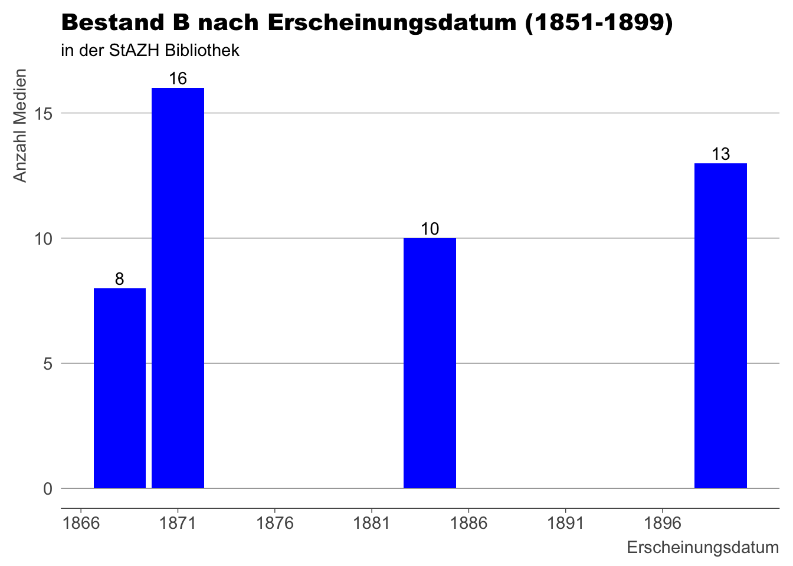

library(tidyverse)
library(ggplot2)
library(dplyr)
library(readr)
library(readxl)
library(devtools)
library(statR)Abschlussprojekt
Einleitung
In diesem R-Projekt versuche ich unseren Bibliotheks-Bestand nach dem Jahr der Veröffentlichung der einzelnen Medien aufzustellen. Konkret also lautet die Frage: “Wie viele Bücher haben wir, welche z.Bsp. 1950 publiziert wurden?”
Daten
Bei den verwendeten Daten handelt es sich um eine Bestandesliste aller Datensätze in der Bibliothek des Staatsarchiv ZH. Diese wurde von SLSP (Swiss Librarian Service Platform) produziert und zur Verfügung gestellt. Mit ALMA, dem von uns verwendeten Bibliotheksprogramm, sind die Datensätze auf 100’000 Zeilen limitiert, daher war es einfacher, direkt beim Anbieter anzufragen, anstatt selbst etwas zusammen zu basteln.
bib_bestand <- read_excel(here::here("daten/raw/R_Projekt.xlsx")) |>
janitor::clean_names()
invisible(capture.output(glimpse(bib_bestand)))Analyseziele
Ich möchte jeden der fünf Bestände in jeweils 6 Zeitstrahlen unterteilen und dies dann auch graphisch darstellen (24 Graphiken). Auch noch ein grosses Streudiagramm, wo man sieht, wie die Verteilung unter den einzelnen Beständen (A-E) aussieht.
Daten Aufbereitung
#Testbereich, keine endgültige Aufbearbeitung
invisible(capture.output(glimpse(bib_bestand)))
#Die Funktion gibt die Anzahl der Einträge in Publication Date zurück, bei denen ein Wert vorhanden ist: 8462
bib_gefiltert<-bib_bestand$publication_date
sum(!is.na(bib_bestand$publication_date))[1] 8462#2 Aus der Spalte "Publication Date" das Minuszeichen entfernen, da sonst eine Sortierung nach Jahreszahlen (auch filter) nicht möglich ist.
bib_bestand_besenrein <- bib_bestand
bib_bestand_besenrein$publication_date <- gsub("-", "", bib_bestand_besenrein$publication_date)
invisible(capture.output(glimpse(bib_bestand_besenrein)))
#3 Einzig die Spalte publication_date aus dem Datensatz extrahiert.
bib_nur_publikation <- subset(bib_bestand_besenrein, select = publication_date)
#4 In nummerischen Vektor umgewandelt für den Filter nach Jahreszahlen
bib_bestand_besenrein$publication_date <- as.numeric(bib_bestand_besenrein$publication_date)bib_gefiltert_vor_1800 <- filter(bib_bestand_besenrein,(publication_date <=1800))
bib_gefiltert_1800_1850 <- filter(bib_bestand, between(publication_date, 1800, 1850))
bib_gefiltert_1851_1899 <- filter(bib_bestand_besenrein, between(publication_date, 1850, 1900))
bib_gefiltert_1900_1950 <- filter(bib_bestand_besenrein, between(publication_date, 1900, 1950))
bib_gefiltert_1951_1999 <- filter(bib_bestand_besenrein, between(publication_date, 1951, 1999))
bib_gefiltert_2000_2050 <- filter(bib_bestand_besenrein, between(publication_date, 2000, 2050)) #Versuch, nun auch noch nach der jeweiligen Standort-Signatur (A-E) zu sortieren
#A Geschichte des Auslands
bib_gefiltert_1600_2025_A <- filter(
bib_bestand_besenrein,
between(publication_date, 1600, 2025),
grepl("^A", permanent_call_number) | grepl("A.*III|III.*A", permanent_call_number))
#Visualisierung
ggplot(bib_gefiltert_1600_2025_A, mapping=aes(x=publication_date))+
geom_bar()+labs(title="Bibliotheksbestand A nach Veröffentlichungszeit der einzelnen Medien",
subtitle="in der StAZH Bibliothek")+theme_stat()
#B Schweizer Geschichte
bib_gefiltert_1600_2025_B <- filter(
bib_bestand_besenrein,
between(publication_date, 1600, 2025),
grepl("^B", permanent_call_number) | grepl("B.*III|III.*B", permanent_call_number))
#Visualisierung
ggplot(bib_gefiltert_1600_2025_B, mapping=aes(x=publication_date))+
geom_bar()+labs(title="Bibliotheksbestand B nach Veröffentlichungszeit der einzelnen Medien",
subtitle="in der StAZH Bibliothek")+theme_stat()
#C Geschichte der Kantone
bib_gefiltert_1600_2025_C <- filter(
bib_bestand_besenrein,
between(publication_date, 1600, 2025),
grepl("^C", permanent_call_number) | grepl("C.*III|III.*C", permanent_call_number))
#Visualisierung
ggplot(bib_gefiltert_1600_2025_C, mapping=aes(x=publication_date))+
geom_bar()+labs(title="Bibliotheksbestand C nach Veröffentlichungszeit der einzelnen Medien",
subtitle="in der StAZH Bibliothek")+theme_stat()#D Zürcher Geschichte
bib_gefiltert_1600_2025_D <- filter(
bib_bestand_besenrein,
between(publication_date, 1600, 2025),
grepl("^D", permanent_call_number) | grepl("D.*III|III.*D", permanent_call_number))
#Visualisierung
ggplot(bib_gefiltert_1600_2025_D, mapping=aes(x=publication_date))+
geom_bar()+labs(title="Bibliotheksbestand D nach Veröffentlichungszeit der einzelnen Medien",
subtitle="in der StAZH Bibliothek")+theme_stat()
#E Hilfswissenschaften
bib_gefiltert_1600_2025_E <- filter(
bib_bestand_besenrein,
between(publication_date, 1600, 2025),
grepl("^E", permanent_call_number) | grepl("E.*III|III.*E", permanent_call_number))
#Visualisierung
ggplot(bib_gefiltert_1600_2025_E, mapping=aes(x=publication_date))+
geom_bar()+labs(title="Bestand E nach Erscheinungsdatum d. Bücher",
subtitle="in der StAZH Bibliothek")+theme_stat()+labs(x = "Erscheinungsdatum", y = "Anzahl Medien")Fragen an den Datensatz
Welcher Bestand enthält durchschnittlich die ältesten Publikationen?
Welcher Bestand ist am stärksten gewachsen (und über welchen Zeitraum)?
Wie viele Publikationen haben wir von Bestand X aus dem Jahr X?
Daten Visualisierung
In gewissen Bestände, haben wir aus einer bestimmten Zeitspanne weniger als 10 Publikationen. Diese habe ich graphisch nicht dargestellt.
A - E Gesamtbestand 1600 - 2025
ggplot(bib_bestand_besenrein, mapping=aes(x=publication_date))+
geom_histogram()+labs(title="Bestand A nach Erscheinungsdatum (vor 1800)",
subtitle="in der StAZH Bibliothek")+labs(x = "Erscheinungsdatum", y = "Anzahl Medien")+geom_bar(fill = "purple")`stat_bin()` using `bins = 30`. Pick better value with `binwidth`.Warning: Removed 131660 rows containing non-finite outside the scale range
(`stat_bin()`).Warning: Removed 131660 rows containing non-finite outside the scale range
(`stat_count()`).Vor 1800
A
bib_gefiltert_vor_1800_A <- filter(bib_bestand_besenrein,(publication_date <=1800),grepl("^A", permanent_call_number) | grepl("A.*III|III.*A", permanent_call_number))
ggplot(bib_gefiltert_vor_1800_A, mapping=aes(x=publication_date))+
geom_bar()+labs(title="Bestand A nach Erscheinungsdatum (vor 1800)",
subtitle="in der StAZH Bibliothek")+theme_stat()+labs(x = "Erscheinungsdatum", y = "Anzahl Medien")+geom_text(stat='count', aes(label=after_stat(count)), vjust=-0.3)+geom_bar(fill = "steelblue")+
scale_x_continuous(breaks = seq(1600, 1800, by = 25))count(bib_gefiltert_vor_1800_A)# A tibble: 1 × 1
n
<int>
1 81print(bib_gefiltert_vor_1800_A)# A tibble: 81 × 16
mms_id author title publication_date permanent_call_number
<chr> <chr> <chr> <dbl> <chr>
1 "990091327050205526" "Sinc… "Die… 1726 Archivabt.: B VIII 3…
2 "990090920720205526,\"Fa… "& me… "& C… 1652 Archivabt.: E II 18
3 "990092475440205526" <NA> "Neu… 1682 III AAf 0 LS
4 "990092475440205526" <NA> "Neu… 1682 III AAf 0 LS
5 "990092475440205526" <NA> "Neu… 1682 III AAf 0 LS
6 "990092475440205526" <NA> "Neu… 1682 III AAf 0 LS
7 "990092475440205526" <NA> "Neu… 1682 III AAf 0 LS
8 "990092475440205526" <NA> "Neu… 1682 III AAf 0 LS
9 "990092475440205526" <NA> "Neu… 1682 III AAf 0 LS
10 "990092475440205526" <NA> "Neu… 1682 III AAf 0 LS
# ℹ 71 more rows
# ℹ 11 more variables: normalized_call_number <chr>, item_call_number <chr>,
# description <chr>, barcode <chr>, item_policy <chr>, base_status <chr>,
# process_type <chr>, library_code <chr>, library_name <chr>,
# location_code <chr>, location_name <chr>B
In unserem B-Bestand befinden sich zwischen 1600 und 1800 nur 3 Medien. Diese erschienen1726, 1787 und 1791. Hier verzichte ich auf eine graphische Darstellung.
bib_gefiltert_vor_1800_B <- filter(bib_bestand_besenrein,(publication_date <=1800),grepl("^B", permanent_call_number) | grepl("B.*III|III.*B", permanent_call_number))
invisible(capture.output(glimpse(bib_gefiltert_vor_1800_B)))
#Rows: 3
#Columns: 16
count(bib_gefiltert_vor_1800_B)# A tibble: 1 × 1
n
<int>
1 3C
In unserem C-Bestand befinden sich zwischen 1600 und 1800 nur 2 Medien. Diese erschienen 1652 und 1726. Hier verzichte ich auf eine graphische Darstellung.
bib_gefiltert_vor_1800_C <- filter(bib_bestand_besenrein,(publication_date <=1800),grepl("^A", permanent_call_number) | grepl("C.*III|III.*C", permanent_call_number))
invisible(capture.output(glimpse(bib_gefiltert_vor_1800_C)))
#Rows: 2
#Columns: 16
count(bib_gefiltert_vor_1800_C)# A tibble: 1 × 1
n
<int>
1 2D
In unserem D-Bestand befinden sich zwischen 1600 und 1800 nur 2 Medien. Diese erschienen 1652 und 1726. Hier verzichte ich auf eine graphische Darstellung.
bib_gefiltert_vor_1800_D <- filter(bib_bestand_besenrein,(publication_date <=1800),grepl("^A", permanent_call_number) | grepl("D.*III|III.*D", permanent_call_number))
invisible(capture.output(glimpse(bib_gefiltert_vor_1800_D)))
#Rows: 2
#Columns: 16
count(bib_gefiltert_vor_1800_D)# A tibble: 1 × 1
n
<int>
1 2E
In unserem E-Bestand befinden sich zwischen 1600 und 1800 nur 2 Medien. Diese erschienen 1652 und 1726. Hier verzichte ich auf eine graphische Darstellung.
bib_gefiltert_vor_1800_E <- filter(bib_bestand_besenrein,(publication_date <=1800),grepl("^A", permanent_call_number) | grepl("E.*III|III.*E", permanent_call_number))
invisible(capture.output(glimpse(bib_gefiltert_vor_1800_E)))
#Rows: 2
#Columns: 16
count(bib_gefiltert_vor_1800_E)# A tibble: 1 × 1
n
<int>
1 21800 - 1850
A
bib_gefiltert_1800_1850_A <- filter(bib_bestand, between(publication_date, 1800, 1850),grepl("^A", permanent_call_number) | grepl("A.*III|III.*A", permanent_call_number))
ggplot(bib_gefiltert_1800_1850_A, mapping=aes(x=publication_date))+
geom_bar()+labs(title="Bestand A nach Erscheinungsdatum (1800-1850)",
subtitle="in der StAZH Bibliothek")+theme_stat()+labs(x = "Erscheinungsdatum", y = "Anzahl Medien")+geom_text(stat='count', aes(label=after_stat(count)), vjust=-0.3)+geom_bar(fill = "steelblue")+
scale_x_continuous(breaks = seq(1800, 1850, by = 5))count(bib_gefiltert_1800_1850_A)# A tibble: 1 × 1
n
<int>
1 187B
bib_gefiltert_1800_1850_B <- filter(bib_bestand, between(publication_date, 1800, 1850),grepl("^B", permanent_call_number) | grepl("B.*III|III.*B", permanent_call_number))
ggplot(bib_gefiltert_1800_1850_B, mapping=aes(x=publication_date))+
geom_bar()+labs(title="Bestand B nach Erscheinungsdatum (1800-1850)",
subtitle="in der StAZH Bibliothek")+theme_stat()+labs(x = "Erscheinungsdatum", y = "Anzahl Medien")+geom_bar(fill = "blue1")+
scale_x_continuous(breaks = seq(1800, 1850, by = 5))count(bib_gefiltert_1800_1850_B)# A tibble: 1 × 1
n
<int>
1 24C
bib_gefiltert_1800_1850_C <- filter(bib_bestand, between(publication_date, 1800, 1850),grepl("^C", permanent_call_number) | grepl("C.*III|III.*C", permanent_call_number))
ggplot(bib_gefiltert_1800_1850_C, mapping=aes(x=publication_date))+
geom_bar()+labs(title="Bestand C nach Erscheinungsdatum (1800-1850)",
subtitle="in der StAZH Bibliothek")+theme_stat()+labs(x = "Erscheinungsdatum", y = "Anzahl Medien")+geom_text(stat='count', aes(label=after_stat(count)), vjust=-0.3)+geom_bar(fill = "blue")+
scale_x_continuous(breaks = seq(1800, 1850, by = 5))count(bib_gefiltert_1800_1850_C)# A tibble: 1 × 1
n
<int>
1 86D
bib_gefiltert_1800_1850_D <- filter(bib_bestand, between(publication_date, 1800, 1850),grepl("^D", permanent_call_number) | grepl("C.*III|III.*D", permanent_call_number))
ggplot(bib_gefiltert_1800_1850_D, mapping=aes(x=publication_date))+
geom_bar()+labs(title="Bestand D nach Erscheinungsdatum (1800-1850)",
subtitle="in der StAZH Bibliothek")+theme_stat()+labs(x = "Erscheinungsdatum", y = "Anzahl Medien")+geom_text(stat='count', aes(label=after_stat(count)), vjust=-0.3)+geom_bar(fill = "blue4")+
scale_x_continuous(breaks = seq(1800, 1850, by = 5))count(bib_gefiltert_1800_1850_D)# A tibble: 1 × 1
n
<int>
1 47E
bib_gefiltert_1800_1850_E <- filter(bib_bestand, between(publication_date, 1800, 1850),grepl("^E", permanent_call_number) | grepl("E.*III|III.*E", permanent_call_number))
ggplot(bib_gefiltert_1800_1850_E, mapping=aes(x=publication_date))+
geom_bar()+labs(title="Bestand E nach Erscheinungsdatum (1800-1850)",
subtitle="in der StAZH Bibliothek")+theme_stat()+labs(x = "Erscheinungsdatum", y = "Anzahl Medien")+geom_text(stat='count', aes(label=after_stat(count)), vjust=-0.3)+geom_bar(fill = "blue4")+
scale_x_continuous(breaks = seq(1800, 1850, by = 5))count(bib_gefiltert_1800_1850_E)# A tibble: 1 × 1
n
<int>
1 2111851 - 1899
A
bib_gefiltert_1851_1899_A <- filter(bib_bestand, between(publication_date, 1851, 1899),grepl("^A", permanent_call_number) | grepl("A.*III|III.*A", permanent_call_number))
ggplot(bib_gefiltert_1851_1899_A, mapping=aes(x=publication_date))+
geom_bar()+labs(title="Bestand A nach Erscheinungsdatum (1851-1899)",
subtitle="in der StAZH Bibliothek")+theme_stat()+labs(x = "Erscheinungsdatum", y = "Anzahl Medien")+geom_text(stat='count', aes(label=after_stat(count)), vjust=-0.3)+geom_bar(fill = "steelblue")+
scale_x_continuous(breaks = seq(1851, 1899, by = 5))
count(bib_gefiltert_1851_1899_A)# A tibble: 1 × 1
n
<int>
1 135B
bib_gefiltert_1851_1899_B <- filter(bib_bestand, between(publication_date, 1851, 1899),grepl("^B", permanent_call_number) | grepl("B.*III|III.*B", permanent_call_number))
ggplot(bib_gefiltert_1851_1899_B, mapping=aes(x=publication_date))+
geom_bar()+labs(title="Bestand B nach Erscheinungsdatum (1851-1899)",
subtitle="in der StAZH Bibliothek")+theme_stat()+labs(x = "Erscheinungsdatum", y = "Anzahl Medien")+geom_text(stat='count', aes(label=after_stat(count)), vjust=-0.3)+geom_bar(fill = "blue")+
scale_x_continuous(breaks = seq(1851, 1899, by = 5))count(bib_gefiltert_1851_1899_B)# A tibble: 1 × 1
n
<int>
1 47C
bib_gefiltert_1851_1899_C <- filter(bib_bestand, between(publication_date, 1851, 1899),grepl("^A", permanent_call_number) | grepl("C.*III|III.*C", permanent_call_number))
ggplot(bib_gefiltert_1851_1899_C, mapping=aes(x=publication_date))+
geom_bar()+labs(title="Bestand C nach Erscheinungsdatum (1851-1899)",
subtitle="in der StAZH Bibliothek")+theme_stat()+labs(x = "Erscheinungsdatum", y = "Anzahl Medien")+geom_text(stat='count', aes(label=after_stat(count)), vjust=-0.3)+geom_bar(fill = "blue3")+
scale_x_continuous(breaks = seq(1851, 1899, by = 5))
count(bib_gefiltert_1851_1899_C)# A tibble: 1 × 1
n
<int>
1 273D
bib_gefiltert_1851_1899_D <- filter(bib_bestand, between(publication_date, 1851, 1899),grepl("^D", permanent_call_number) | grepl("D.*III|III.*D", permanent_call_number))
ggplot(bib_gefiltert_1851_1899_D, mapping=aes(x=publication_date))+
geom_bar()+labs(title="Bestand D nach Erscheinungsdatum (1851-1899)",
subtitle="in der StAZH Bibliothek")+theme_stat()+labs(x = "Erscheinungsdatum", y = "Anzahl Medien")+geom_text(stat='count', aes(label=after_stat(count)), vjust=-0.3)+geom_bar(fill = "blue3")+
scale_x_continuous(breaks = seq(1851, 1899, by = 5))count(bib_gefiltert_1851_1899_D)# A tibble: 1 × 1
n
<int>
1 183E
bib_gefiltert_1851_1899_E <- filter(bib_bestand, between(publication_date, 1851, 1899),grepl("^E", permanent_call_number) | grepl("E.*III|III.*E", permanent_call_number))
ggplot(bib_gefiltert_1851_1899_E, mapping=aes(x=publication_date))+
geom_bar()+labs(title="Bestand E nach Erscheinungsdatum (1851-1899)",
subtitle="in der StAZH Bibliothek")+theme_stat()+labs(x = "Erscheinungsdatum", y = "Anzahl Medien")+geom_text(stat='count', aes(label=after_stat(count)), vjust=-0.3)+geom_bar(fill = "blue3")+
scale_x_continuous(breaks = seq(1851, 1899, by = 5))
count(bib_gefiltert_1851_1899_E)# A tibble: 1 × 1
n
<int>
1 1871900 - 1950
A
bib_gefiltert_1900_1950_A <- filter(bib_bestand_besenrein, between(publication_date, 1900, 1950),grepl("^A", permanent_call_number) | grepl("A.*III|III.*A", permanent_call_number))
ggplot(bib_gefiltert_1900_1950_A, mapping=aes(x=publication_date))+
geom_bar()+labs(title="Bestand A nach Erscheinungsdatum (1900-1950)",
subtitle="in der StAZH Bibliothek")+theme_stat()+labs(x = "Erscheinungsdatum", y = "Anzahl Medien")+geom_bar(fill = "blue3")+
scale_x_continuous(breaks = seq(1900, 1950, by = 5))
count(bib_gefiltert_1900_1950_A)# A tibble: 1 × 1
n
<int>
1 10B
In unserem B-Bestand befinden sich zwischen 1900 und 1950 nur 5 Medien. Diese erschienen 1907, 1934, 1937, 1948 und 1950. Hier verzichte ich auf eine graphische Darstellung.
bib_gefiltert_1900_1950_B <- filter(bib_bestand_besenrein, between(publication_date, 1900, 1950),grepl("^A", permanent_call_number) | grepl("B.*III|III.*B", permanent_call_number))
invisible(capture.output(glimpse(bib_gefiltert_1900_1950_B)))
#Rows: 5
#Columns: 16
count(bib_gefiltert_1900_1950_B)# A tibble: 1 × 1
n
<int>
1 5C
bib_gefiltert_1900_1950_C <- filter(bib_bestand_besenrein, between(publication_date, 1900, 1950),grepl("^C", permanent_call_number) | grepl("C.*III|III.*C", permanent_call_number))
ggplot(bib_gefiltert_1900_1950_C, mapping=aes(x=publication_date))+
geom_bar()+labs(title="Bestand C nach Erscheinungsdatum (1900-1950)",
subtitle="in der StAZH Bibliothek")+theme_stat()+labs(x = "Erscheinungsdatum", y = "Anzahl Medien")+geom_bar(fill = "blue3")+
scale_x_continuous(breaks = seq(1900, 1950, by = 5))+geom_text(stat='count', aes(label=after_stat(count)), vjust=-0.3)
count(bib_gefiltert_1900_1950_C)# A tibble: 1 × 1
n
<int>
1 185D
E
1951 - 1999
A
B
C
D
E
2000 - 2025
A
B
C
D
E
#Probe-Visualisierung
ggplot(bib_gefiltert_1800_1850, mapping=aes(x=publication_date))+
geom_bar()+labs(title="Publikationen 1800-1850",
subtitle="in der StAZH Bibliothek")
ggplot(bib_gefiltert_1600_2025_E, mapping=aes(x=publication_date))+
geom_bar()+labs(title="Bestand E nach Erscheinungsdatum d. Bücher",
subtitle="in der StAZH Bibliothek")+theme_stat()+labs(x = "Erscheinungsdatum", y = "Anzahl Medien")